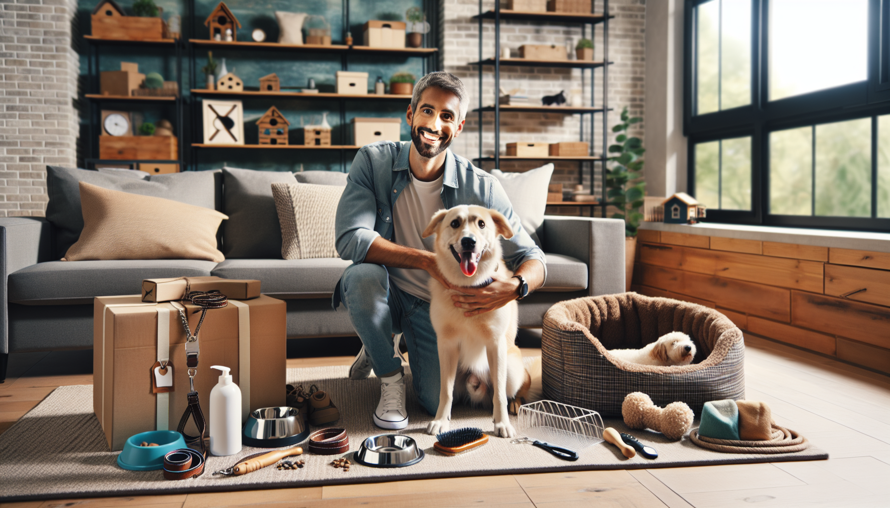

Bringing a dog into your life means gaining a loyal companion, a daily walking buddy, and a whole lot of joy. It also means making sure you have the right gear to keep your pup safe, comfortable, healthy, and entertained. Whether you are a first-time pet parent, a long-time dog lover, or a thoughtful gift shopper searching for something useful, the right accessories can make everyday life with a dog so much smoother.
From walk-time essentials to cozy home comforts, some products are simply must-haves. The best dog accessories are practical, durable, and designed to fit your dog’s personality and lifestyle. They can help with training, improve travel, reduce mess, and even add a little extra style to your routine.
In this guide, we are counting down the top 10 accessories every dog owner needs. These picks cover the basics and beyond, helping you build a collection of essentials that both you and your dog will appreciate every single day.
A good collar is one of the first and most important accessories every dog needs. It is not just about style, although a cute collar definitely adds personality. A well-fitted collar helps keep your dog safe and gives you a place to attach identification in case your pup ever gets lost.
Look for a collar made from durable materials that can stand up to daily wear. Soft nylon, leather, and padded fabrics are all popular choices. The fit should be snug enough that it will not slip off, but loose enough that you can comfortably fit two fingers underneath.
An ID tag is just as important as the collar itself. At a minimum, it should include your dog’s name and your contact information. Personalized tags and collars are especially helpful because they make identification fast and simple.
Every dog owner needs a leash they can count on. Walks are not only essential for exercise, but also for bonding, training, and mental stimulation. A high-quality leash gives you control while helping your dog explore the world safely.
Standard leashes are often the best choice for everyday use because they offer consistent control. For most dogs, a leash between four and six feet works well. Retractable leashes may seem convenient, but they are not always ideal for training or busy areas. A sturdy, non-slip leash with a comfortable handle is usually the safest and most versatile option.
If your dog is strong or energetic, consider a leash with reinforced stitching or heavy-duty hardware. Matching collar and leash sets can also be a fun and stylish option for pet owners who love coordinated accessories.
While collars are essential, many dogs also benefit from a good harness. Harnesses are especially useful for puppies, small breeds, dogs that pull, and dogs with sensitive necks. They distribute pressure more evenly across the chest and shoulders, which can make walks safer and more comfortable.
There are several types of harnesses available, including step-in styles, no-pull harnesses, and adjustable adventure harnesses. The best choice depends on your dog’s size, behavior, and activity level. For dogs in training, a front-clip no-pull harness can be a game changer.
A harness is also a smart accessory for travel, hikes, or crowded public spaces where extra control matters. It is one of those dog accessories that quickly becomes part of your everyday routine.
Food and water bowls may seem simple, but the right ones can make mealtime cleaner, safer, and more enjoyable. Every dog owner should have sturdy bowls that are easy to wash and appropriately sized for their dog.
Stainless steel bowls are a favorite because they are durable, hygienic, and resistant to bacteria. Ceramic bowls can also be a beautiful option, especially for pet owners who want something that blends with their home decor. Non-slip bases help prevent spills and sliding, which is especially useful for enthusiastic eaters.
For dogs that eat too quickly, a slow feeder bowl can support better digestion. And for homes with multiple pets, personalized bowls can be a charming and practical touch.
Dogs need a comfortable place to rest, and a quality dog bed gives them a dedicated space to relax and recharge. Whether your dog curls up in a tiny ball or stretches out across the room, there is a bed style that fits their sleep habits.
Orthopedic beds are ideal for senior dogs or breeds prone to joint issues. Bolster beds provide extra support and a sense of security. Washable covers are a major plus for keeping things fresh and fur-free.
A dog bed also helps define your pet’s own space within your home, which can be useful for training and daily routines. It is one of the best accessories for combining comfort, function, and a feeling of home.
Regular grooming is a big part of dog care, and having the right tools at home makes the process much easier. Even short-haired dogs benefit from brushing, nail care, and the occasional bath. Grooming helps reduce shedding, supports skin health, and gives you a chance to check for any changes or irritations.
At a minimum, dog owners should have a brush suited to their dog’s coat type, pet-safe shampoo, nail clippers or a grinder, and a towel made for muddy paws or bath time. Long-haired breeds may also need detangling combs or deshedding tools.
Starting a grooming routine early helps dogs become more comfortable with handling. It can also save money on professional grooming visits and keep your dog looking and feeling their best between appointments.
Let us be honest: this is not the most glamorous accessory, but it is absolutely essential. Every dog owner needs a reliable supply of poop bags and a convenient holder that attaches to a leash or bag. Being prepared during walks is simply part of responsible pet ownership.
A compact waste bag dispenser keeps bags easy to access when you need them most. Many dog owners prefer lightweight holders that clip securely onto the leash handle or a treat pouch. Biodegradable or eco-friendly poop bags are also a great option for those trying to reduce waste.
This accessory may be small, but it makes a big difference when you are out and about with your pup.
Dogs need more than physical exercise. Mental enrichment is just as important, especially for intelligent, energetic, or easily bored breeds. Toys and chews help prevent destructive behavior, reduce boredom, and keep dogs engaged when you are busy.
The best toy collection includes a mix of options: chew toys, puzzle toys, fetch toys, and comfort toys. Rotating toys every few days can help keep things interesting. If your dog is a powerful chewer, look for durable materials designed for heavy use.
Toys also make fantastic gifts for dog lovers. They are practical, fun, and easy to personalize based on a dog’s size, age, and play style.
If your dog joins you for car rides, vacations, hikes, or even quick errands, travel accessories are a must. Portable gear helps keep your dog safe, hydrated, and comfortable while away from home.
Some of the most useful travel items include a collapsible water bowl, a portable water bottle, a car seat cover, a dog seat belt or travel harness, and a compact treat pouch. These accessories are especially valuable for active families and pet owners who love adventures with their dogs.
Travel-friendly products also make thoughtful gifts because they are useful without being overly specific. If you know someone who takes their dog everywhere, these accessories are likely to become daily favorites.
Training is a lifelong part of dog ownership, and having treats ready can make teaching and reinforcing good behavior much easier. A dedicated treat jar or pouch keeps rewards organized and accessible, whether you are working on basic commands at home or practicing leash manners on a walk.
Many pet owners find that a small training kit makes a huge difference. This can include a treat pouch, clicker, training treats, and a mat or target tool. Keeping these items in one place encourages consistency, which is key for successful training.
Practical training accessories are also excellent for new dog owners. They support confidence, routine, and positive interactions between dogs and their humans.
With so many options available, it helps to focus on your dog’s size, age, behavior, and lifestyle. A puppy may need training gear and chew toys, while a senior dog may benefit most from an orthopedic bed and easy-access bowls. Active dogs may need durable harnesses and travel accessories, while homebody pups might prioritize cozy bedding and enrichment toys.
Quality matters too. Well-made accessories tend to last longer, perform better, and offer more comfort and safety. And if you are shopping for a gift, personalized dog accessories can add an extra thoughtful touch that stands out.
The top 10 accessories every dog owner needs are not just about convenience. They help create a safer, happier, and more organized life for both dogs and their humans. From collars and leashes to beds, toys, and travel gear, each item plays a role in your dog’s daily comfort and well-being.
If you are building your own dog accessory collection or shopping for the perfect gift for a pet lover, start with the essentials that combine function, comfort, and personality. A few smart choices can make everyday routines easier and much more enjoyable.
Looking for thoughtful, stylish, and personalized pet products? Shop personalized pet products at SnoutAndAbout on Etsy.